“Adventure Clean & Simple WordPress Theme ” Documentation by “trendyWebStar” v1.0
“Adventure Clean & Simple WordPress Theme Documentation”
Created: 22/11/2011
By: trendyWebStar
Email: themes@trendywebstar.com
Thank you for purchasing my theme. If you have any questions that are beyond the scope of this help file, please feel free to email via my user page contact form here.
Table of Contents
- Theme overview
- Getting Started
- Working With Sliders
- Portfolio
- Blog
- CSS & Typography
- JavaScript in the Theme
- Shortcodes & Editor Features
- Plugins & Widgets
- Psd files
- Sources, credits and helpfull links
Template overview - top
Hi, firstly I would like to thank you for purchasing my template. In this section I`ll briefly introduce Adventure features. So lets start.
Template features:
- 10 homepage Styles to choose from
- 50 background Version
- Unlimited background Colors
- Tabs
- Filterable Portfolio
- Working Contact Form
- Many more jQuery Features
- 4 PSD File
Adventure Works in:
- Internet Explorer 7
- Internet Explorer 8
- Internet Explorer 9
- Firefox 2
- Firefox 3
- Firefox 3.5
- Firefox 3.6
- Firefox 4
- Firefox 5
- Firefox 6
- Safari 4
- Safari 5
- Opera
- Chrome 4
- Chrome 5
- Chrome 6
- Chrome 7+
To make some order in this documentation I`ll start with how to install this theme.
Getting Started - top
Installation & setting up the theme.
After you download the download package "Adventure-download", unzip it.In the folder "Adventure-download" you have 4 folders, "Help","Dummy Content", "PSD" and "Adventure".The theme is located in folder "Adventure".Go to your WordPress site and copy or upload the "Adventure" folder into your themes folder on your site.
The path is: your-site-name/wp-content/themes/
Go to your admin area of your site, and activate your "Adventure" theme.
You should get something like this after you install it:
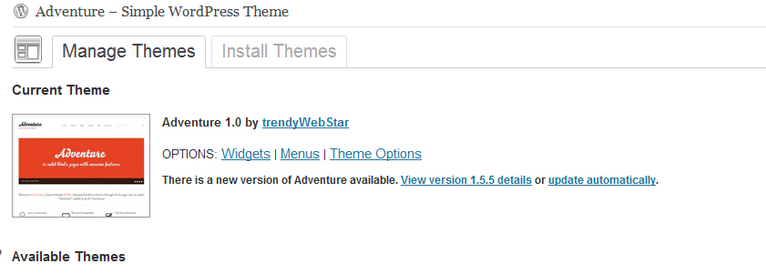So you have it installed, if you want to import the dummy content just go to the dummy content folder in your download package and import it via wordpress to your site, using wordpress tools.You go to tools->import.And then choose the the dummy content to import
Setting Up the Homepage
So now you need to set up the homepage.First thing's first.go to settings->reading and choose "Front page displays" as static page, and select which page you want, by the default you should choose "home"
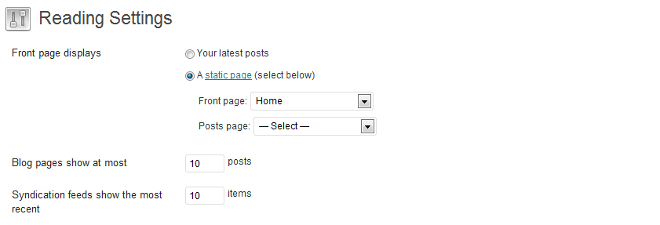Setting Up the Menu
So you have your homepage activated,now you need to activate your menu otherwise it will look messed up.Go to Appearance->Menus, and under Primary Menu menu select Main Menu and under Footer select sidebar menu.I've put in footer the same menu as in sidebar but you can just add new menu and put it in footer, it's like 5 minutes process.
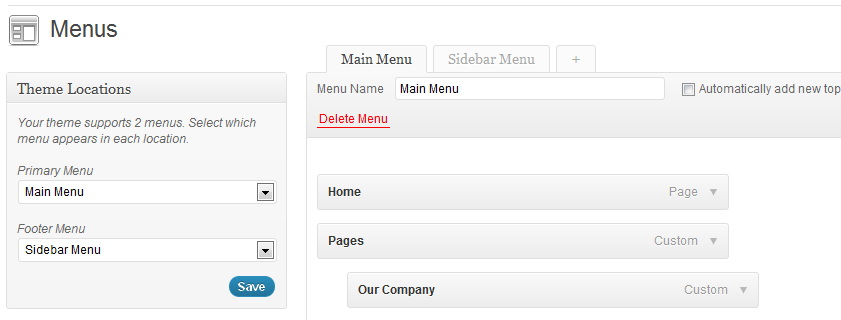Setting Up the Slider
So you choose one from 10 homepages styles.Go to Appearance->Themes Options, and under tab "Homepage" choose the sliders.So if you want to upload images for slider go to media->add new, and upload the images.
So lets say you want to add images for the Default Simple Slider.After you've uploaded images.Click link "show", and there you have some options.
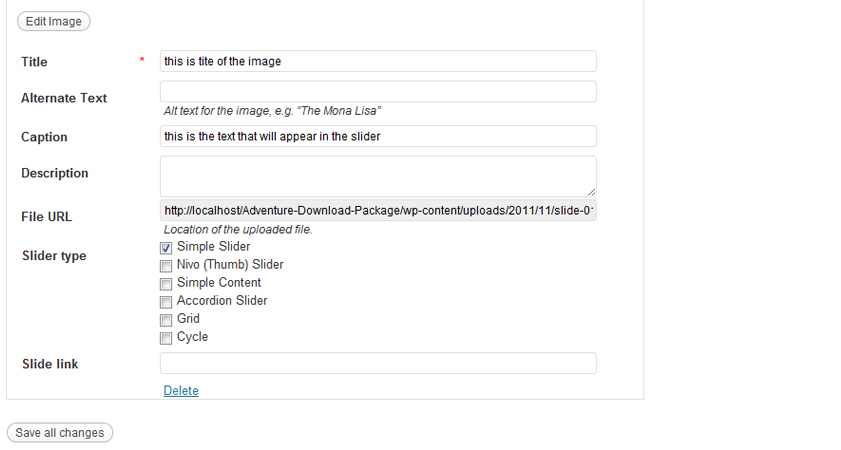And that's pretty much it.It goes the same way for any other slider, except 3D Slider which uses plugin.
After you've added images for the slider,go back to homepage tab and select from which area should slider take images, if you've uploaded like i've showed you, select "Media library unattached images".If you're wondering why there are some other check box to select it's because you can put images from your portfolio/blog to be showed in your slider.
Just be aware that images are not automatically resized so here's the size table for images used in sliders
- Simple Slider- 950x350px
- Accordion Slider- 1020x550px
- Nivo Slider- 1020x550px
- Nivo Thumb Slider- 1020x550px
- Content Slider- 620x350px
- Static Slider- 620x350px (Uses Featured Image)
- Cycle Slider- 950x350px
- Video Block Homepage- 1020x570px
- Grid Homepage- 318x150px (one-third),238x150px (one-fourth),118x150px (one-eight),478x150px (one-half)
In Homepage tab after you select slider you want to use, you have additional options for each slider, isn't that cool? :)
Genreal tab in Theme Options
In "General" tab, you can upload your header/footer logo, put google analytics code,404 error message, contact and social informations, used in footer widget that displays either social icons or contact info, or both.Plus you can change default intro page content which displays on each page(you can put this intro page content differently for each page when you edit page.)
Working With Portfolio - top
Portfolio Pages comes with lots of different looks.You have to make one portfolio which later can be displayed in one of 6 unique ways.That means you can't have more that one portfolio templates looks activated in the same time.When you finish building up your portfolio items you can choose how to display it and how many items per page.
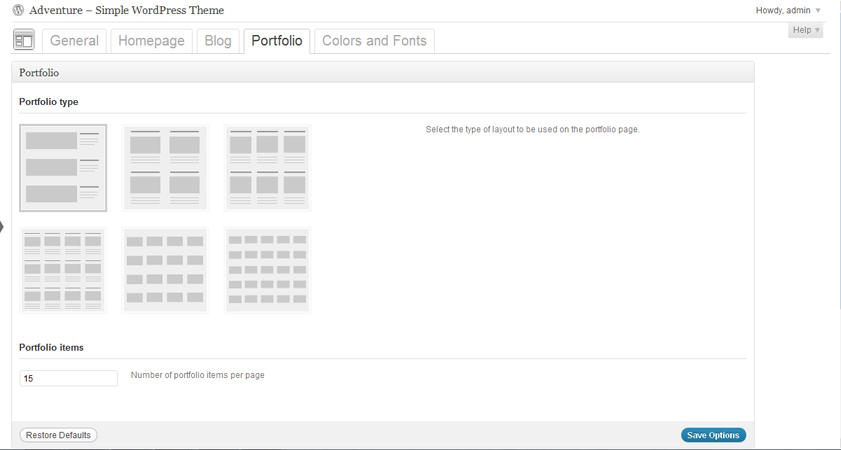Adding Items to Portfolio
It's pretty easy to add new portfolio items, just go to portfolio items->add new, and there you have it.
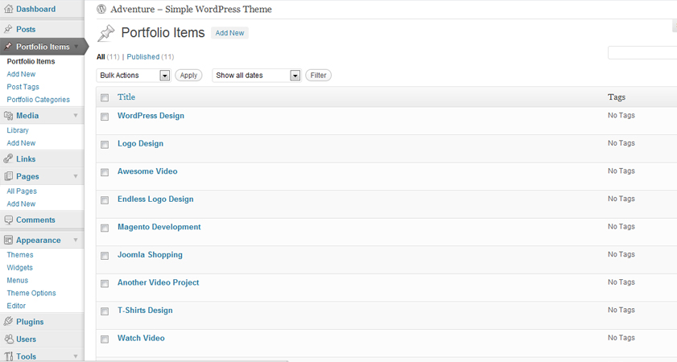 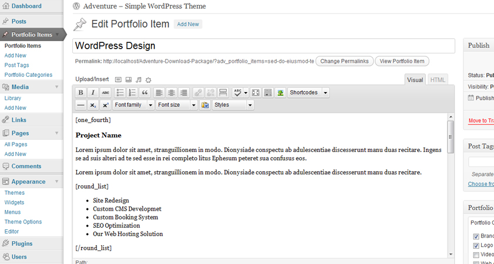Adding Image/video to Portfolio
To add image to portfolio just choose featured image on every portfolio post, and make it featured image.Recommended size for portfolio images is 710x210px, which will be resized after you choose portfolio look.
To add vimeo or youtube video just put video link on portfolio post.
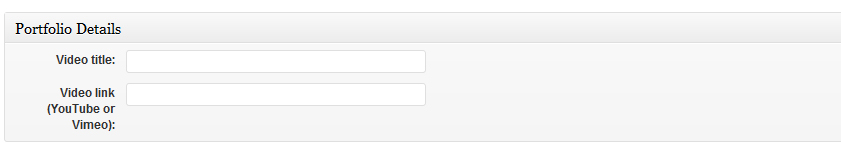Working With Blog - top
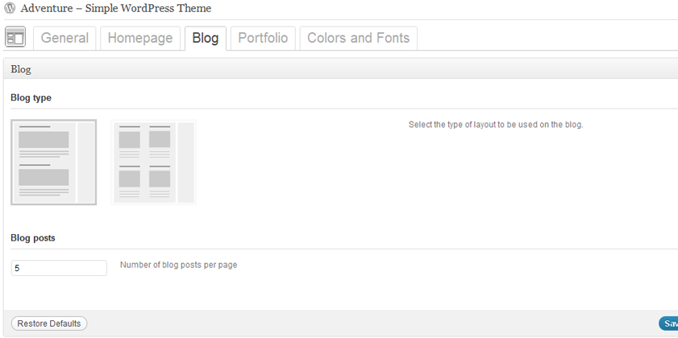You can choose one from two blog look to use in your site.You can limit number of post that will display per page.
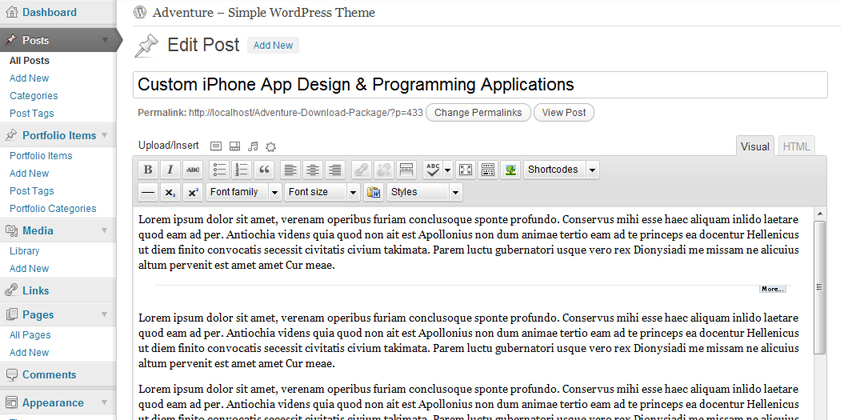CSS & Typography - top
You can choose one of 20 styles included in this theme, with next update dark version will be available too.
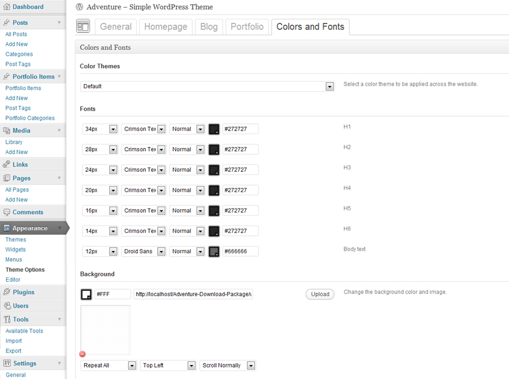In admin area you can choose which style to use and you can play around with some typography stuff.
JavaScript in the Theme - top
Nivo Slider
This plugin generates the slideshow for you and supports many customizations. Select which images are used in the slider and how you want it to appear, and the plugin does the rest.More info at Nivo Slider
Cycle Slider
The jQuery Cycle Plugin is a slideshow plugin that supports many different types of transition effects. It supports pause-on-hover, auto-stop, auto-fit, before/after callbacks, click triggers and much more.More info at Cycle Slider
Slides JS
Slides is a crazy simple slideshow plugin for jQuery. With features like looping, auto play, fade or slide transition effects.More info at Slides JS
Masonry - Portfolio Filterable
Masonry is a layout plugin for jQuery. Think of it as the flip side of CSS floats. Whereas floating arranges elements horizontally then vertically, Masonry arranges elements vertically then horizontally according to a grid..More info at Filterable
Tabify
This Jquery plugin lets you easily create tabbed content. All you need is an ul-element with some li-elements and a couple of related content-divs. The major difference between Tabify and its competitors is its size.More info at Tabify
Pieacemaker Slider
The Piecemaker V2 is an open source Flash ActionScript 3 image rotator.More info at Pieacemaker Slider, or read the documentation
Kwicks Accordion Slider
Awesome Accordion Slider free for use.More info at Kwicks Slider
PrettyPhoto
PrettyPhoto - prettyPhoto is a jQuery lightbox clone that support images, videos, flash and iframes. More information can be found at prettyPhoto
Theme Header
<script type="text/javascript" src="<?php echo get_template_directory_uri(); ?>/js/jquery.min.js"></script> <script type="text/javascript" src="<?php echo get_template_directory_uri(); ?>/js/custom.js"></script> <script type="text/javascript" src="<?php echo get_template_directory_uri(); ?>/js/cycle-slider/cycle.js"></script> <script type="text/javascript" src="<?php echo get_template_directory_uri(); ?>/js/slides/slides.min.jquery.js"></script> <script type="text/javascript" src="<?php echo get_template_directory_uri(); ?>/js/tabify/jquery.tabify.js"></script> <script src="http://cdn.jquerytools.org/1.2.5/tiny/jquery.tools.min.js"></script> <script type="text/javascript" src="<?php echo get_template_directory_uri(); ?>/js/prettyPhoto/jquery.prettyPhoto.js"></script> <script type="text/javascript" src="<?php echo get_template_directory_uri(); ?>/js/twitter/jquery.tweet.js"></script> <script type="text/javascript" src="<?php echo get_template_directory_uri(); ?>/js/scrolltop/scrolltopcontrol.js"></script> <script type="text/javascript" src="<?php echo get_template_directory_uri(); ?>/js/portfolio/filterable.js"></script> <script type="text/javascript" src="<?php echo get_template_directory_uri(); ?>/js/modernizr/modernizr-2.0.3.js"></script> <script type="text/javascript" src="<?php echo get_template_directory_uri(); ?>/js/easing/jquery.easing.1.3.js"></script> <script type="text/javascript" src="<?php echo get_template_directory_uri(); ?>/js/swfobject/swfobject.js"></script> <script type="text/javascript" src="<?php echo get_template_directory_uri(); ?>/js/nivo-slider/jquery.nivo.slider.js"></script> <script type="text/javascript" src="<?php echo get_template_directory_uri(); ?>/js/kwicks/jquery.kwicks-1.5.1.pack.js"></script>
Back to top Issues
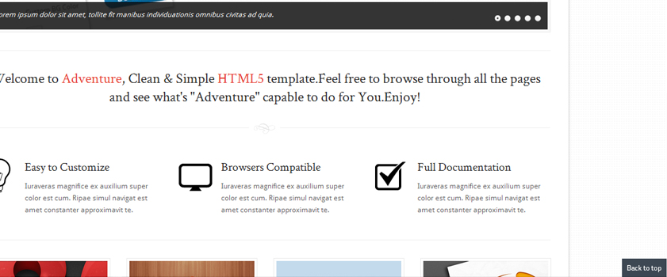To make sure that your "back to top" works you must edit "scrolltopcontrol.js" file located in js/scrolltop folder, and check the path of the image:

Shortcodes & Editor Features - top
Adventure Theme has about 60 shortcodes that can be used while working.Lucky for you, you don't have to learn which shortcodes does what exactly. Just choose a shortcode from your editor list.Plus editor has some extra features you can use while working on your new project.
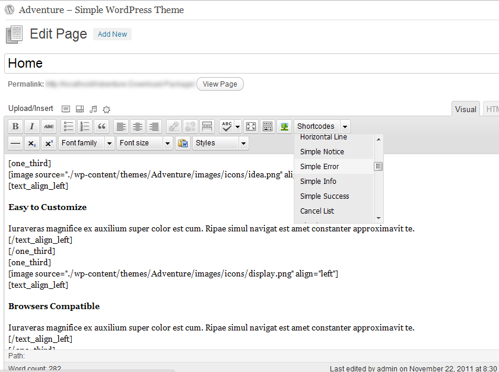 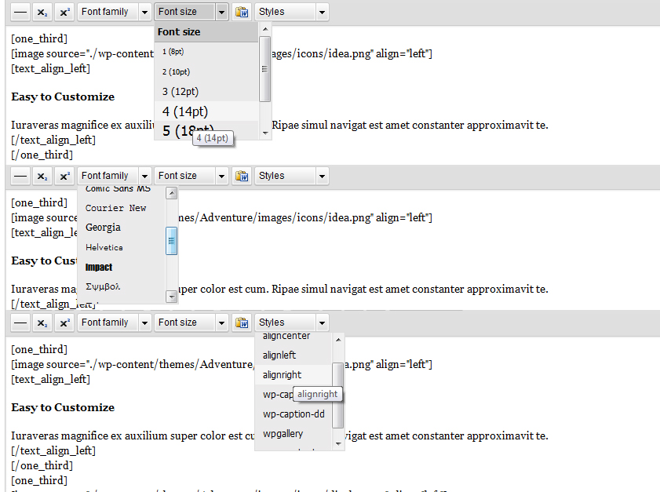List of major Shortcodes
- One Column-[one_column][/one_column]
- One Half -[one_half][/one_half]
- One Half Last-[one_half_last][/one_half_last]
- One Third-[one_third][/one_third]
- One Third Last-[one_third_last][/one_third_last]
- One Third Big-[one_third_big][/one_third_big]
- One Third Big Last-[one_third_big_last][/one_third_big_last]
- One Fourth-[one_fourth][/one_fourth]
- One Fourth Last-[one_fourth_last][/one_fourth_last]
- One Fifth-[one_fifth][/one_fifth]
- One Fifth Last-[one_fifth_last][/one_fifth_last]
- One Sixth-[one_sixth][/one_sixth]
- One Sixth Last-[one_sixth_last][/one_sixth_last]
- Inner Content-[inner_content][/inner_content]
- Inner Content Last-[inner_content_last][/inner_content_last]
- Horizontal Line-[horizontal_line]
- Simple Notice-[simple_notice][/simple_notice]
- Simple Error-[simple_error][/simple_error]
- Simple Info-[simple_info][/simple_info]
- Simple Success-[simple_success][/simple_success]
- Cancel List-[cancel_list][/cancel_list]
- Check List-[checklist_list][/checklist_list]
- Check List 2-[check_list][/check_list]
- Round List-[round_list][/round_list]
- Facebook Social Link-[social_facebook][/social_facebook]
- Twitter Social Link-[social_twitter][/social_twitter]
- RSS Social Link-[social_feed][/social_feed]
- Contact Phone-[contact_phone][/contact_phone]
- Contact Fax-[contact_fax][/contact_fax]
- Contact Email-[contact_email][/contact_email]
- Button Blue-[button color="blue" size="small" type=" "][/button]
- Button Orange-[button color="orange" size="small" type=" "][/button]
- Button Green-[button color="green" size="small" type=" "][/button]
- Button Pink-[button color="pink" size="small" type=" "][/button]
- Button Black-[button color="black" size="small" type=" "][/button]
- Button Yellow-[button color="yellow" size="small" type=" "][/button]
- Button Red-[button color="red" size="small" type=" "][/button]
- Button Purple-[button color="purple" size="small" type=" "][/button]
- Button Dark Blue-[button color="dark-blue" size="small" type=" "][/button]
- Button Light Blue-[button color="light-blue" size="small" type=" "][/button]
- Button Blue Big-[button color="blue" size="big" type=" "][/button]
- Button Orange Big-[button color="orange" size="big" type=" "][/button]
- Button Green Big-[button color="green" size="big" type=" "][/button]
- Button Pink Big-[button color="pink" size="big" type=" "][/button]
- Button Black Big-[button color="black" size="big" type=" "][/button]
- Button Yellow Big-[button color="yellow" size="big" type=" "][/button]
- Button Red Big-[button color="red" size="big" type=" "][/button]
- Button Purple Big-[button color="purple" size="big" type=" "][/button]
- Button Dark Blue Big-[button color="dark-blue" size="big" type=" "][/button]
- Button Light Blue Big-[button color="light-blue" size="big" type=" "][/button]
- Tab Group-[tabgroup][/tabgroup]
- Tab-[tab title="Your Title Goes Here"][/tab]
- Pricing Box Green-[pricing_box title="Starter" price="$10 per month" color="green"][/pricing_box]
- Pricing Box Orange-[pricing_box title="Starter" price="$10 per month" color="orange"][/pricing_box]
- Pricing Box Blue-[pricing_box title="Starter" price="$10 per month" color="blue"][/pricing_box]
- Pricing Box Red-[pricing_box title="Starter" price="$10 per month" color="red"][/pricing_box]
- Pricing Box Purple-[pricing_box title="Starter" price="$10 per month" color="purple"][/pricing_box]
- Text Align Left-[text_align_left][/text_align_left]
- Image-[image source="" align=""]
Plugins & Widgets - top
Adventure uses some free to use plugins, here's the list
- Piecemaker 2 - link
- Advanced Recent Posts Widget - link
- Contact Form 7 - link
- Twitter Widget Pro - link
PSD files - top
I've Included 4 PSD file in "PSD" folder.Layers are named, grouped and slices are named, ready to be export in PNG or JPG file if you want to change graphic element.
- 01_Homepage.psd
- 02_About_Us.psd
- 03_Portfolio.psd
- 04_Portfolio_Sidebar.psd
Credits and helpfull links - top
Fonts
- Crimson Text
- Arial (standard)
- Helvetica (standard)
- Other Fonts are taken from google Web Fonts
Icons
End of documentation
Once again, thank you so much for purchasing this theme. As I said at the beginning, I'd be glad to help you if you have any questions relating to this theme. No guarantees, but I'll do my best to assist. If you have a more general question relating to the themes on ThemeForest, you might consider visiting the forums and asking your question in the "Item Discussion" section.
trendyWebStar